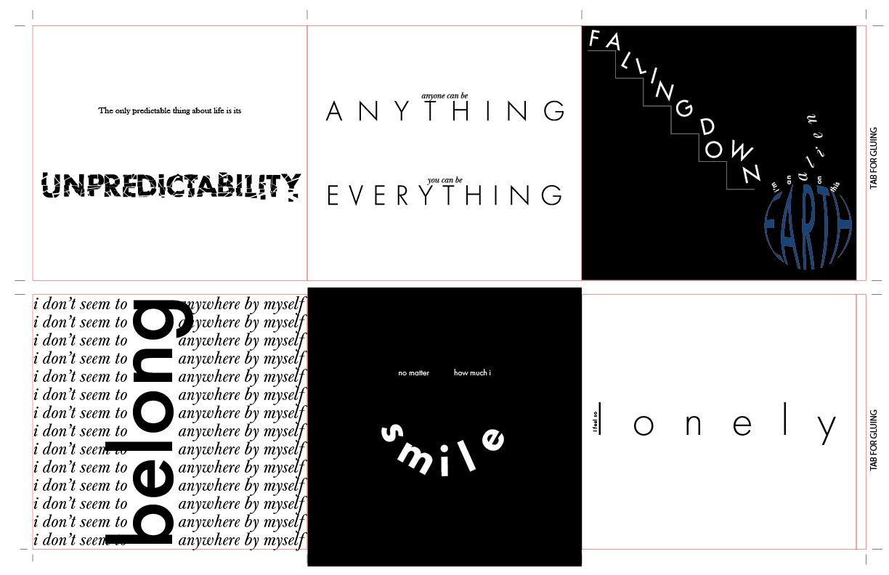
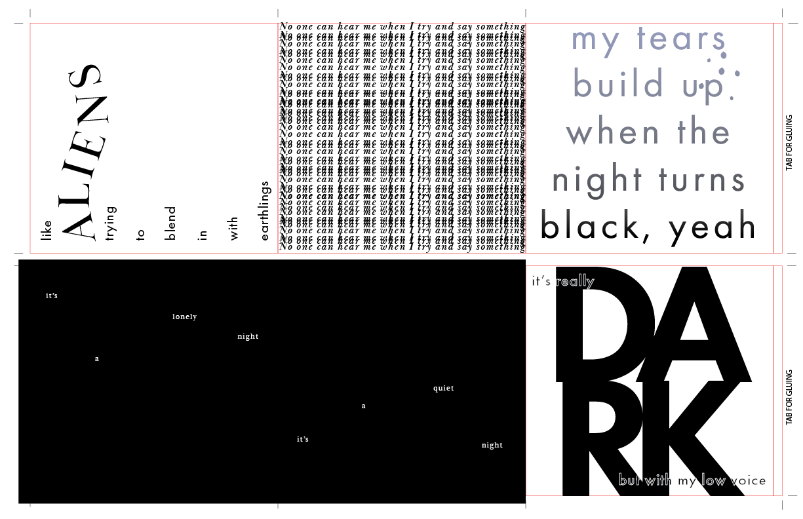
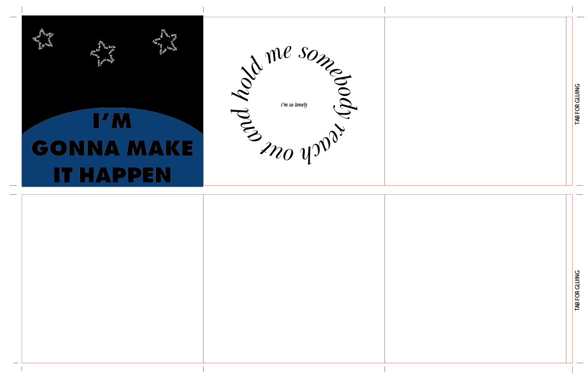

Abigail Hutabarat

When I was making this project, I was super inspired by the band 'Stray Kids.' One of their members recently came out with a song that I felt had a lot of meaning and really interesting visualizations to it, so I did just that. I created a typographic booklet that I then physically printed out and folded.
Here are the documents that I printed out.
  